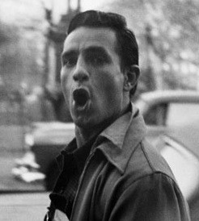

I used to be hidden, but now you can see me thanks to jQuery!
Who is your favorite beat author?
Jack Keroauc
“[...]the only people for me are the mad ones, the ones who are mad to live, mad to talk, mad to be saved, desirous of everything at the same time, the ones who never yawn or say a commonplace thing, but burn, burn, burn like fabulous yellow roman candles exploding like spiders across the stars and in the middle you see the blue centerlight pop and everybody goes “Awww!”
Allen Ginsberg
I saw the best minds of my generation destroyed by madness, starving hysterical naked,
dragging themselves through the negro streets at dawn looking for an angry fix,
angelheaded hipsters burning for the ancient heavenly connection to the starry dynamo in the machinery of night,
who poverty and tatters and hollow-eyed and high sat up smoking in the supernatural darkness of cold-water flats floating across the tops of cities contemplating jazz,
who bared their brains to Heaven under the El and saw Mohammedan angels staggering on tenement roofs illuminated,
who passed through universities with radiant cool eyes hallucinating Arkansas and Blake-light tragedy among the scholars of war,
who were expelled from the academies for crazy & publishing obscene odes on the windows of the skull,
who cowered in unshaven rooms in underwear, burning their money in wastebaskets and listening to the Terror through the wall,
who got busted in their pubic beards returning through Laredo with a belt of marijuana for New York,
who ate fire in paint hotels or drank turpentine in Paradise Alley, death, or purgatoried their torsos night after night
with dreams, with drugs, with waking nightmares, alcohol and cock and endless balls...
Call me Ishmael. Some years ago—never mind how long precisely—having little or no money in my purse, and nothing particular to interest me on shore, I thought I would sail about a little and see the watery part of the world. It is a way I have of driving off the spleen and regulating the circulation. Whenever I find myself growing grim about the mouth; whenever it is a damp, drizzly November in my soul; whenever I find myself involuntarily pausing before coffin warehouses, and bringing up the rear of every funeral I meet; and especially whenever my hypos get such an upper hand of me, that it requires a strong moral principle to prevent me from deliberately stepping into the street, and methodically knocking people’s hats off—then, I account it high time to get to sea as soon as I can. This is my substitute for pistol and ball. With a philosophical flourish Cato throws himself upon his sword; I quietly take to the ship. There is nothing surprising in this. If they but knew it, almost all men in their degree, some time or other, cherish very nearly the same feelings towards the ocean with me.